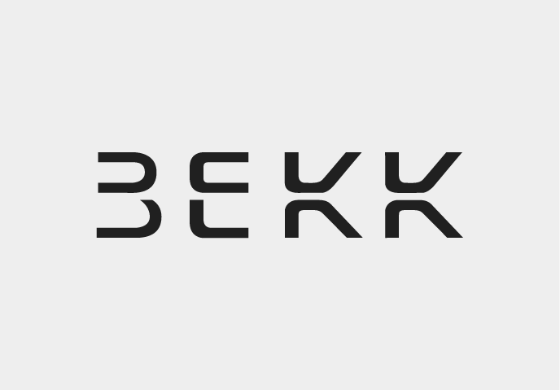
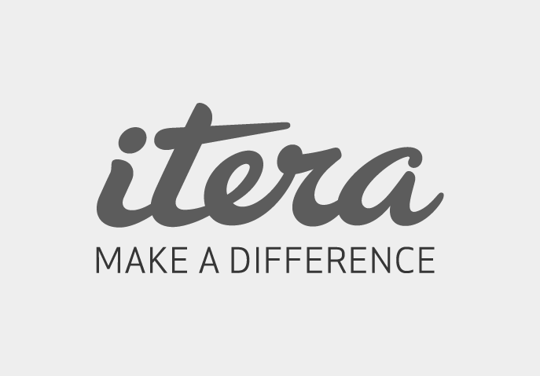

SPONSORS

- 


- 


Want to be a sponsor of the flatMap(Oslo) conference?
Send an email to flatmap@arktekk.no
presentation
Automatic type class derivation, introduced in shapeless 2.0.0 at the beginning of 2013 by Lars Hupel in the form of the TypeClass type class (yes, you read that right), deserves a great deal more attention than it has received up until now. Built on top of shapeless's core generic programming primitives it allows instances for a wide variety of useful type classes to be derived for Scala ADTs with no (or at most minimal) boilerplate.
But until recently the types that type class instances could be derived for (families of Scala case classes sharing a common sealed trait and with fairly minimal support for recursion) was quite limited. In shapeless 2.1.0 its scope has been significantly expanded to include non-case classes (so long as they are sufficiently "case class-like") and more complex recursion patterns (eg. through types outside the immediate family). It's now also possible to provide specialized, non-derived, instances for specific case class members of the families being derived for.
This means that shapeless type class derivation is now the tool of choice for many important generic programming problems in Scala.
In this talk I will demonstrate this with example derivations of ordering and type-safe equality type classes, serialization and deserialization, type safe diffs, functors and a variety of other folds, unfolds and transformations which would otherwise require huge amounts of tedious boilerplate to implement.
Miles has been doing stuff with Scala for the last ten years, most recently with _.underscore and Precog. His best known project, the Scala generic programming library shapeless, is the weapon of choice wherever boilerplate needs to be scrapped or arities abstracted over.
Want to be a sponsor of the flatMap(Oslo) conference?
Send an email to flatmap@arktekk.no